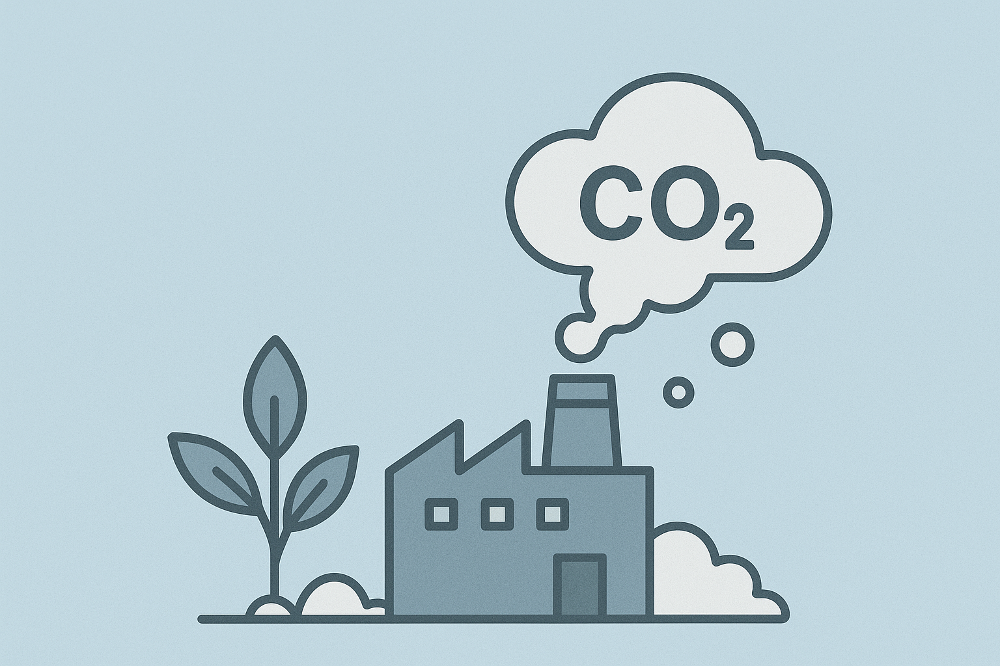

🧪 Simulador: Reduzindo sua Pegada de Carbono
Responda algumas perguntas simples e veja como pequenas mudanças podem reduzir sua emissão de CO₂ mensal.

Responda algumas perguntas simples e veja como pequenas mudanças podem reduzir sua emissão de CO₂ mensal.